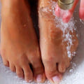
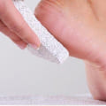
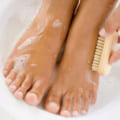

Se recomandă îngrijirea picioarelor de către UESM*
* European Union of Medical Specialists
-

Spălați-vă picioarele în fiecare zi cu apă caldă și săpun
-
Alegeți o încălțăminte confortabilă, care nu vă prinde degetele și nu vă strânge
-

Folosiți o piatră ponce sau o perie atunci când vă spălați picioarele
-

Respectați regulile de igienă personală
- Încetinește intensitatea dezvoltării infecției
- Elimină problemele precum mâncărimea și scărpinatul
- Distruge în totalitate ciuperca
- Reface placa unghială


Ultimele păreri ale cumpărătorilor
Georgeta, 43 de ani
Această cremă Exodermin este ideală pentru cei, care au pielea de la picioare sensibilă și crapă în permanență. Personal pe mine m-a ajutat foarte mult. Au trecut probabil 5 zile, și nu mai am deja crăpături pe călcâie, iar pielea a devenit așa de fină, este foarte plăcut.
George, 35 de ani
Alerg în fiecare dimineață în parcul din apropierea casei și deseori mi se udă picioarele din cauza ierbii umede și băltoacelor de apă. Unghiile și călcâiele mele sunt într-o stare deplorabilă, nu am avut grijă de ele cum trebuie și acum plătesc pentru asta… Îmi e rușine să mă descalț în fața prietenei mele. Dar Exodermin mi-a refăcut picioarele! Unghiile s-au întors la fosta lor structură cu timpul, iar călcâiele mele nu mai arată acum ca niște bucăți de noroi atrofiat. Este un remediu excelent și ce îmi place în particular la el cel mai mult, este că nu conține nicio substanță chimică – totul este natural, uitați ce face puterea vindecătoare a naturii!
Cristian, 54 de ani
Chiar și culoarea și mirosul cremei ne vorbesc despre faptul că este naturală! Este o plăcere să utilizez astfel de remedii, știind că nu poate dăuna în niciun fel, și mai ales că ne ajută să combatem această nenorocire. Înainte nu aveam foarte mare grijă de picioarele mele.. Am luat vreo infecție de la piscină și gata, nu a avut timp nici măcar să se vindece, totul era plin de coșuri mici cu puroi și erupții cutanate. Exodermin m-a ajutat în 3 zile. Ce pot să mai zic de acest remediu, dacă își face efectul așa de repede? Trebuie luat categoric, îl recomand tuturor celor care se confruntă cu astfel de probleme.
Georgeta, 43 de ani
Această cremă Exodermin este ideală pentru cei, care au pielea de la picioare sensibilă și crapă în permanență. Personal pe mine m-a ajutat foarte mult. Au trecut probabil 5 zile, și nu mai am deja crăpături pe călcâie, iar pielea a devenit așa de fină, este foarte plăcut.
George, 35 de ani
Alerg în fiecare dimineață în parcul din apropierea casei și deseori mi se udă picioarele din cauza ierbii umede și băltoacelor de apă. Unghiile și călcâiele mele sunt într-o stare deplorabilă, nu am avut grijă de ele cum trebuie și acum plătesc pentru asta… Îmi e rușine să mă descalț în fața prietenei mele. Dar Exodermin mi-a refăcut picioarele! Unghiile s-au întors la fosta lor structură cu timpul, iar călcâiele mele nu mai arată acum ca niște bucăți de noroi atrofiat. Este un remediu excelent și ce îmi place în particular la el cel mai mult, este că nu conține nicio substanță chimică – totul este natural, uitați ce face puterea vindecătoare a naturii!
Cristian, 54 de ani
Chiar și culoarea și mirosul cremei ne vorbesc despre faptul că este naturală! Este o plăcere să utilizez astfel de remedii, știind că nu poate dăuna în niciun fel, și mai ales că ne ajută să combatem această nenorocire. Înainte nu aveam foarte mare grijă de picioarele mele.. Am luat vreo infecție de la piscină și gata, nu a avut timp nici măcar să se vindece, totul era plin de coșuri mici cu puroi și erupții cutanate. Exodermin m-a ajutat în 3 zile. Ce pot să mai zic de acest remediu, dacă își face efectul așa de repede? Trebuie luat categoric, îl recomand tuturor celor care se confruntă cu astfel de probleme.